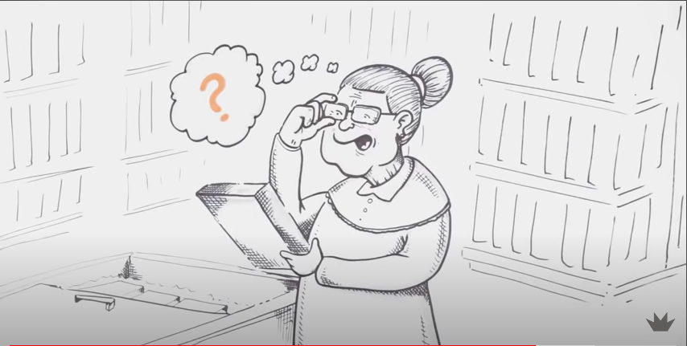

24 de maio de 2023
AULA 2: SAN, Soberania e Direito Humano a Alimentação Adequada
Nesta aula aprendemos mais sobre os conceitos básicos de Segurança
Alimentar e Nutricional. Estes são três conceitos fundamentais
INTERDEPENDENTES: Direito Humano à Alimentação Adequada, Segurança
Alimentar e Nutricional e Soberania Alimentar.
Achei muito interessante a evolução do conceito de SAN com o passar dos anos,
a inclusão de sustentabilidade e diversidade cultural como fatores centrais,
deixando claro que uma alimentação saudável vai além de alimentos em
quantidade e qualidade suficiente. Abaixo trouxe alguns eixos de SAN que
achei válido pontuar:
Produção sustentável> Conservação dos recursos naturais> Sociobiodiversidade>
Aproximação produtor-consumidor> Alimentação Adequada e Saudável> Políticas
públicas.
Acredito que o Brasil caminha, junto as iniciativas de SAN, rumo a equidade
alimentar, porém a passos lentos. Me entristece ver que, em um país com tanta
biodiversidade e disponibilidade de alimentos, ainda temos pessoas passando
fome, e mesmo com esforços populacionais e também pelo governo, muitas metas
não são atingidas. Acredito que as políticas públicas precisam dialogar melhor
com o público-alvo e que pequenas atitudes fazem a diferença pra quem está em
situação de vulnerabilidade alimentar (doações, etc..).
O Direito Humano a Alimentação Adequada (DHAA), que está presente tanto na
Declaração Universal dos Direitos Humanos quanto na Constituição Federal, é uma
enorme conquista que, a meu ver, coloca a SAN em voga populacional e nas pautas
políticas. O direito de estar livre da fome: esta dimensão se refere ao
provimento, e demanda implementação imediata. O fato é que hoje no Brasil, com
o crescimento do trabalho informal e os altos índices de desemprego, além do
exorbitante aumento nos valores dos alimentos da cesta básica, esse direito não
está em pleno exercício por grande parte da população. Isso ficou muito mais
evidente com o advento da Pandemia do COVID-19, onde pessoas que dependiam de
“bicos” para se alimentar se viram sem sua fonte de sustento e diante de
alimentos básicos com o valor altíssimo. No nosso país a população pobre tem
que se desdobrar pra conseguir alimento, tanto o acesso físico quanto o
econômico são muito defasados para essas pessoas, tendo seus direitos não
atendidos. Urge ações governamentais e de solidariedade para reverter e
mitigar essa problemática persistente no Brasil e honrar com o DHAA presente
na constituição.
Já a Soberania Alimentar foi um conceito inicialmente de difícil compreensão
pra mim, tive que estudar e procurar me aprofundar pra entender sua relevância.
A soberania alimentar é o direito dos povos de definir suas próprias políticas
agrícolas e alimentares, levando em consideração suas necessidades,
prioridades e culturas locais. Ela envolve a capacidade de produzir alimentos
de forma sustentável, preservando a diversidade agrícola e cultural, e
garantindo o acesso a alimentos saudáveis e culturalmente adequados. A
importância da soberania alimentar é que ela promove a segurança alimentar
e nutricional, fortalece as comunidades locais e contribui para a redução
da pobreza. Ao permitir que as pessoas tenham controle sobre a produção e
o consumo de alimentos, a soberania alimentar também promove a autonomia
e a dignidade dos agricultores e consumidores. Além disso, a soberania
alimentar enfatiza a sustentabilidade ambiental, incentivando práticas
agrícolas que preservam os recursos naturais e reduzem os impactos
negativos no meio ambiente. Ela promove a agricultura familiar e a
produção local, contribuindo para a resiliência dos sistemas alimentares
diante de desafios como mudanças climáticas, crises globais e grandes
agricultores.
A reportagem que trouxe abaixo é uma entrevista feita no Dia Mundial da
Segurança Alimentar com a vice-presidente do Consea- RS e fala sobre a situação
atual no país e no estado, abordando os conceitos destacados anteriormente:
Aumento da fome: “A insegurança alimentar é resultado de ações políticas”,
diz vice do Consea.
Além disso, trouxe um vídeo que ilustra e explica de maneira didática a situação
da fome no Brasil e a importância do conceito de soberania alimentar:
31 de maio de 2023
AULA 3: Bases legais que sustentam a SAN no Brasil
Neste dia, foi pedido para nós fizéssemos uma leitura prévia para
participação da aula. O livro “A Contribuição Brasileira à Segurança
Alimentar e Nutricional sustentável”, feito em parceria com a Editora
UFRGS, inclui quatro capítulos que buscam situar a abordagem
brasileira frente ao debate internacional de construção de sistemas
alimentares saudáveis e sustentáveis. Iniciam o livro apresentando
a política de segurança alimentar e nutricional do país e seguem
falando sobre os canais através dos quais os sistemas alimentares
afetam negativamente a saúde, discutem as contribuições de guias
alimentares para uma alimentação saudável e sustentável e
apresentam o papel das compras públicas na construção de sistemas
alimentares sustentáveis. A segunda parte do livro caracteriza o
modelo de segurança alimentar e nutricional adotado no Brasil em
sua diversidade de olhares e atores, oferecem uma metodologia
de análise e mapeamento dos desertos alimentares no país, fazem
um resgate da atuação primordial da sociedade civil na defesa
da segurança alimentar e nutricional, analisam a atuação das
universidades na implementação das políticas públicas de SAN
e contribuem com um panorama das pesquisas no país que
enfocam a Soberania e Segurança Alimentar. Na terceira
parte, apresentam os desafios e potencialidades da
sociobiodiversidade no contexto da alimentação escolar,
discutem o papel dos mercados domésticos no acesso a
alimentos de qualidade, a relevância da manutenção das
sementes crioulas e da promoção da agroecologia no âmbito
da SAN, tomam a cadeia da polpa de butiá como referência
para refletir sobre a influências das cadeias alimentares
e apresentam, através da Polifeira do agricultor, um
exemplo de como as feiras podem contribuir para a promoção
da SAN. A última parte apresenta dois relatos: o trabalho
desenvolvido na Univali integrando gestão de resíduos,
hortas e jardins comestíveis e a experiência do projeto
“Bota na mesa” em articular agricultores familiares
para o abastecimento de grandes centros urbanos.
Infelizmente não consegui concluir toda a leitura a tempo da aula,
porém me despertou muita curiosidade e me somou conhecimentos na área.
No contexto do Brasil, um país rico em recursos naturais e com uma
grande produção agropecuária, a contribuição para a Segurança
Alimentar e Nutricional sustentável pode abranger várias iniciativas,
dentre as muitas destacadas na leitura. A agricultura sustentável,
que visa promover a adoção de práticas agrícolas que preservem o
solo, a água e a biodiversidade, como a agroecologia, o plantio
direto, a integração lavoura-pecuária-floresta (ILPF) e o uso
responsável de insumos agrícolas. O investimento em políticas
públicas que fortaleçam a produção da agricultura familiar,
garantindo renda para os produtores rurais e acesso a alimentos
saudáveis para as comunidades locais. Estimular a produção e o
consumo de alimentos variados, incluindo alimentos tradicionais e
regionais, contribuindo para a segurança nutricional e a
valorização da cultura local. Implementar medidas para reduzir
as perdas ao longo da cadeia de produção, distribuição e
consumo de alimentos, evitando que quantidades significativas
de recursos naturais sejam desperdiçadas. Investir em pesquisa
agrícola e tecnológica para o desenvolvimento de práticas e
tecnologias que melhorem a produção, a eficiência e a
sustentabilidade do sistema alimentar. Desenvolver e
implementar políticas eficazes que promovam a Segurança
Alimentar e Nutricional sustentável não é uma tarefa fácil,
envolve governos, sociedade civil, setor privado e
organizações não governamentais, mas juntos alcançamos
resultados significativos.
Durante a aula, antes da exposição das professoras, assistimos a
primeira parte do documentário “Peraí, é nosso direito!”. A
história relata a busca dos direitos por alimentação adequada
de duas comunidades muito pobres, Sururu de Capote em Maceió (AL)
e Vila Santo Afonso em Teresina (PI). O objetivo foi contribuir
com o apoderamento das comunidades e apoiar ações para exigir e
monitorar a realização de seus Direitos Humanos, em especial o
Direito Humano à Alimentação Adequada – DHAA. Este documentário,
que fiz questão de terminar de assistir após a aula, é recheado
de depoimentos que expressam a emoção, a indignação e a força
de pessoas que vivem marginalizadas e submetidas à violação dos
seus direitos. Além disso, o vídeo também conta com a
participação de especialistas e militantes de direitos humanos
que debatem conceitos e a realidade da luta para que sejam
garantidos e efetivados os direitos humanos no Brasil.
Na minha opinião, foi uma aula de muitas reflexões, sai de lá
relativamente abalada por esse contato doloroso de realidades tão
injustas e ao mesmo tempo tão próximas. Como exposto pelas
professoras nesse dia, “Qualquer tipo de RESTRIÇÃO OU VIOLAÇÃO
pode ter um efeito jurídico. É muito importante que todas as pessoas
tenham conhecimento sobre esses direitos, pois, como sabemos, o
primeiro passo para se exigir um direito humano é conhecê-lo e
saber quem tem direito a ele.”. Refleti muito sobre essa frase e
entendi que, apesar de a lei, na teoria, amparar a todos os seus
direitos, sabemos que, na prática, as coisas são diferentes,
ainda mais quando estamos falando de populações periféricas. As
pessoas de baixa escolaridade e que vem de famílias
marginalizadas, estão fadadas a viver em condições sub-humanas
e sem seus direitos atendidos, implorando por ajuda do
Estado, sem serem ouvidas. Precisamos de governantes
comprometidos em mudar a realidade dessas pessoas, em dar
voz as suas dores e conceder-lhes o que é de direito, uma
casa quente, um trabalho digno e um prato de comida na mesa.
Procurei reportagens recentes para saber como estão as
comunidades protagonistas do documentário e fiquei feliz
em saber que, ao que tudo indica, o prefeito está tratando
para que eles sejam realocados para locais com melhores
condições, porém ainda receosa por não saber até que ponto
isso é verdade ou apenas uma jogada de marketing que fala
mais sobre interesses políticos do que sobre o bem-estar
dessa comunidade. Abaixo anexo a reportagem falando a
respeito.
Comitê deve acompanhar mudanças de famílias da comunidade Sururu de
Capote.
07 de junho de 2023
AULA 4: Atividade com CONSEA RS
Neste dia tivemos uma aula com a Nutricionista do CONSEA RS,
Luanda Conrado. Eu estava bem animada com a oportunidade de um
contato mais próximo com alguém de dentro de um órgão que tanto
ouvi falar no curso de Governança em Segurança Alimentar e
Nutricional e ouvir o que acontece lá na realidade e o papel da
nutricionista, pois para mim essa relação era muito distante,
utópica e pouco prática. De início, Luanda nos contou sobre a
Pesquisa de Orçamentos Familiares para diagnóstico de grau de
INSAN que aquelas pessoas se encontram. Me dói muito saber que
mais de 30% da população brasileira passa fome ou tem incerteza
quanto ao acesso de alimentos. Vivemos em um país que o problema
da fome está pautado não na disponibilidade, mas sim no acesso,
visto que parte da sua população não tem renda para consumir esses
alimentos. Como a palestrante bem destacou, o desemprego, a
inflação no preço dos alimentos da cesta básica e a queda no
poder aquisitivo, que foram potencializados com o advento da
pandemia do COVID-19, são as principais causas para essa
parcela tão significativa da população estar em algum nível
de Insegurança Alimentar e Nutricional. O desmonte das políticas
voltadas para a proteção e a promoção de SAN pelo governo passado,
também tem grande responsabilidade pela volta do Brasil ao Mapa
da Fome e reflete o descaso e profunda desigualdade do Estado
para com essa população que tem seu DHAA negligenciado. Me
admira e atrai ver que uma enorme parcela das conquistas
referentes a SAN é responsabilidade da mobilização popular e
de atores da sociedade civil com poder de voz no CONSEA,
gostaria muito de poder fazer parte desse movimento que faz a
diferença na vida de muitas pessoas. Luanda compartilhou conosco
como foi que ela despertou interesse por essa área da nutrição
e acredito que só quando nós temos contato próximo com a
fome, que conseguimos ilustrá-la com rostos e histórias,
que nossa vontade de fazer a diferença vai além da empatia
e solidariedade e parte para ação. Durante a palestra,
foram mostradas diversas ações populares de combate a INSAN,
como o Banquetaço, Quem tem fome tem pressa e as cozinhas e
hortas solidárias. Uma frase dita em aula ficou ressoando
na minha cabeça: “Quem tem fome e não come, some”.
Inconformada com isso e sabendo de toda situação da fome
no Brasil e também em Porto Alegre, resolvi ir atrás e
saber mais sobre como poderia contribuir com as cozinhas
comunitárias, que dão de comer a centenas de pessoas
famintas todos os dias. Através do site Cozinha
Solidária do 0MTST consegui contribuir com 15 reais,
o que garante que duas pessoas terão o que comer
neste mês. Lá eles têm diversas opções de planos, que
cabem em todos os bolsos, para ajudar a comunidade.
Estou buscando me informar a respeito do trabalho
voluntário pois tenho certeza de que seria muito
gratificante poder fazer a diferença.
 14 de junho de 2023
14 de junho de 2023
AULA 5: (IN)SAN no Brasil
Neste dia, antes da aula, fizemos um estudo dirigido que consistia
em assistir o documentário “Josué de Castro- Cidadão do Mundo,
1994” de responder algumas perguntas. O filme é uma cinebiografia
que homenageia a vida e a obra do médico, filósofo, sociólogo e
geógrafo pernambucano que dedicou sua vida ao estudo e combate à
fome. O documentário retrata como Josué de Castro identificou as
causas e consequências da fome, que afetava mais de um bilhão de
pessoas em todo o mundo na época, especialmente aqueles que
viviam abaixo da linha da pobreza. Ele buscou alternativas para
mudar esse cenário e foi autor de vários livros que abordavam
a fome como uma questão política.
Algo que me tocou muito foi que, apesar de seus esforços e
contribuições significativas, Josué de Castro acabou sendo exilado
pela ditadura militar. Ele retratou a miséria e as desigualdades,
mas nunca perdeu a esperança e continuou a propor soluções, se
tornando uma eterna referência. Josué acreditava que a humanidade
tinha recursos naturais, técnicos e financeiros suficientes para
resolver o problema da fome. Mesmo que hoje saibamos que ele
estava certo e que com a atual tecnologia temos condições para
pôr comida no prato de todos, tal problemática persiste permeada
pelos interesses financeiros da classe dominante e falta de
empatia com o próximo. Apesar de ser uma personalidade marcante
e de extrema relevância para as conquistas de Segurança
Alimentar e Nutricional no país, após assistir o documentário,
fiquei triste por saber que muitos desconhecem as batalhas
desse ser icônico. Ele está eternizado em suas obras e segue
inspirando quem se identifica com sua causa, foi muito
interessante conhecer mais sobre essa personalidade.
Além disso, uma das perguntas nos estimulava a procurar mais a
respeito de ações (políticas) que ocorrem no Brasil para combate
à INSAN. Muitas delas eu já havia tido contato no curso que fiz
durante as férias, mas foi importante revê-las e entender um
pouco mais a respeito de cada uma delas. Tanto o Programa Bolsa
Família, transferência de renda que visa combater a pobreza e
a fome e beneficia famílias em situação de vulnerabilidade,
quanto o Programa de Aquisição de Alimentos (PAA), que tem
como objetivo incentivar a agricultura familiar e promover a
compra direta de produtos para abastecer entidades
socioassistenciais, hospitais, escolas e outros órgãos
governamentais, me chamaram muita atenção e creio que devem
ser ainda mais difundidos para um combate efetivo da INSAN.
Durante a exposição em aula deste dia, abordamos a temática
“ALIMENTAÇÃO (E SUA AUSÊNCIA/FOME) NO SÉCULO XXI/PANDEMIA”. Foi
a primeira vez que me deparei com o conceito de “Sindemia Global”:
aponta que as três pandemias, OBESIDADE, DESNUTRIÇÃO E MUDANÇAS
CLIMÁTICAS, interagem umas com as outras, compartilham
determinantes. Esses determinantes nada mais são do que os,
já destacados aqui por mim, interesses da classe dominante,
produção insustentável de alimentos e a falta de políticas
públicas eficazes. Todas essas têm seus desdobramentos, como
o ultraprocessados dos alimentos e escasso acesso a comidas
saudáveis, que potencializam a INSAN. Acredito que um dos
pontos abordados pelas professoras, de que a fome não está
apenas em corpos esqueléticos e que pessoas com IMC normal
ou até mesmo acima do peso podem estar em algum grau de
INSAN, foi importante pra quebra de pré conceitos
estabelecidos pela sociedade e conscientização de nós,
alunos e futuros nutricionistas. Sou grata por poder
ter acesso a esse conteúdo que é tão relevante para um
atendimento adequado e entendimento da realidade da nossa
população.
Abaixo, trouxe alguns vídeos para contribuir com a reflexão das
diferentes formas de desnutrição.
 07 de junho de 2023
07 de junho de 2023
AULA 4: Atividade com CONSEA RS
sdfdssdfdsfdsfdsfsdfds
 07 de junho de 2023
07 de junho de 2023
AULA 4: Atividade com CONSEA RS
sdfdssdfdsfdsfdsfsdfds
07 de junho de 2023
AULA 4: Atividade com CONSEA RS
sdfdssdfdsfdsfdsfsdfds
07 de junho de 2023
AULA 4: Atividade com CONSEA RS
sdfdssdfdsfdsfdsfsdfds
07 de junho de 2023
AULA 4: Atividade com CONSEA RS
sdfdssdfdsfdsfdsfsdfds
07 de junho de 2023
AULA 4: Atividade com CONSEA RS
sdfdssdfdsfdsfdsfsdfds
07 de junho de 2023
AULA 4: Atividade com CONSEA RS
sdfdssdfdsfdsfdsfsdfds
07 de junho de 2023
AULA 4: Atividade com CONSEA RS
sdfdssdfdsfdsfdsfsdfds
07 de junho de 2023
AULA 4: Atividade com CONSEA RS
sdfdssdfdsfdsfdsfsdfds
07 de junho de 2023
AULA 4: Atividade com CONSEA RS
sdfdssdfdsfdsfdsfsdfds
07 de junho de 2023
AULA 4: Atividade com CONSEA RS
sdfdssdfdsfdsfdsfsdfds
07 de junho de 2023
AULA 4: Atividade com CONSEA RS
sdfdssdfdsfdsfdsfsdfds
07 de junho de 2023
AULA 4: Atividade com CONSEA RS
sdfdssdfdsfdsfdsfsdfds